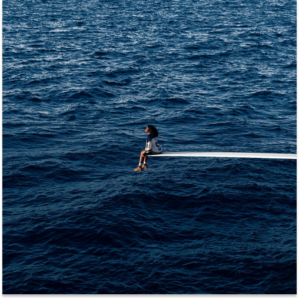

SOS
Sza
Gênero: R&B, Soul
Ano de Lançamento: 2022
Ano de Lançamento: 2022
1h06min
Gênero:
R&B, Soul, Hip Hop
Ano de Lançamento:
2022
Artista:
SZA
Duração:
23 Faixas, 1h06min
SOS é o segundo álbum de estúdio da cantora e
compositora estadunidense SZA. Lançado em 9 de dezembro de
2022 através da Top Dawg Entertainment e RCA Records. Serve
como continuação do álbum anterior de SZA, Ctrl.
TrackList
1. SOS
2. Kill Bill
3. Seek & Destroy
4. Low
5. Love Language
6. Blind
7. Used (ft. Don Toliver)
8. Snooze
9. Notice Me
10. Gone Girl
11. Smoking on my Ex Pack
12. Ghost in the Machine
(ft. Phoebe Bridgers)
13. F2F
14. Nobody Gets Me
15. Conceited
16. Too Late
17. Far
18. Shirt
19. Open Arms (ft. Travis Scott)
20. I Hate U
21. Good Days
22. Forgiveless (ft. Ol' Dirty Bastards)
2. Kill Bill
3. Seek & Destroy
4. Low
5. Love Language
6. Blind
7. Used (ft. Don Toliver)
8. Snooze
9. Notice Me
10. Gone Girl
11. Smoking on my Ex Pack
12. Ghost in the Machine
(ft. Phoebe Bridgers)
13. F2F
14. Nobody Gets Me
15. Conceited
16. Too Late
17. Far
18. Shirt
19. Open Arms (ft. Travis Scott)
20. I Hate U
21. Good Days
22. Forgiveless (ft. Ol' Dirty Bastards)
sza
Solána Rowe, mais conhecida como SZA é uma cantora, compositora e produtora que representa boa parte do que identifica a música negra atual.
São colagens assumidas de sons, gêneros e diferentes conceitos sonoros, eixo que a norte-americana representa na sonoridade vasta que se derrama ao longo de toda a obra.